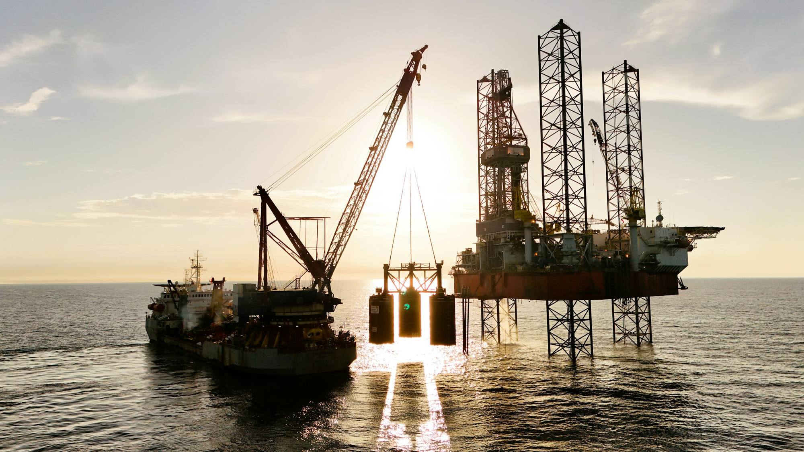
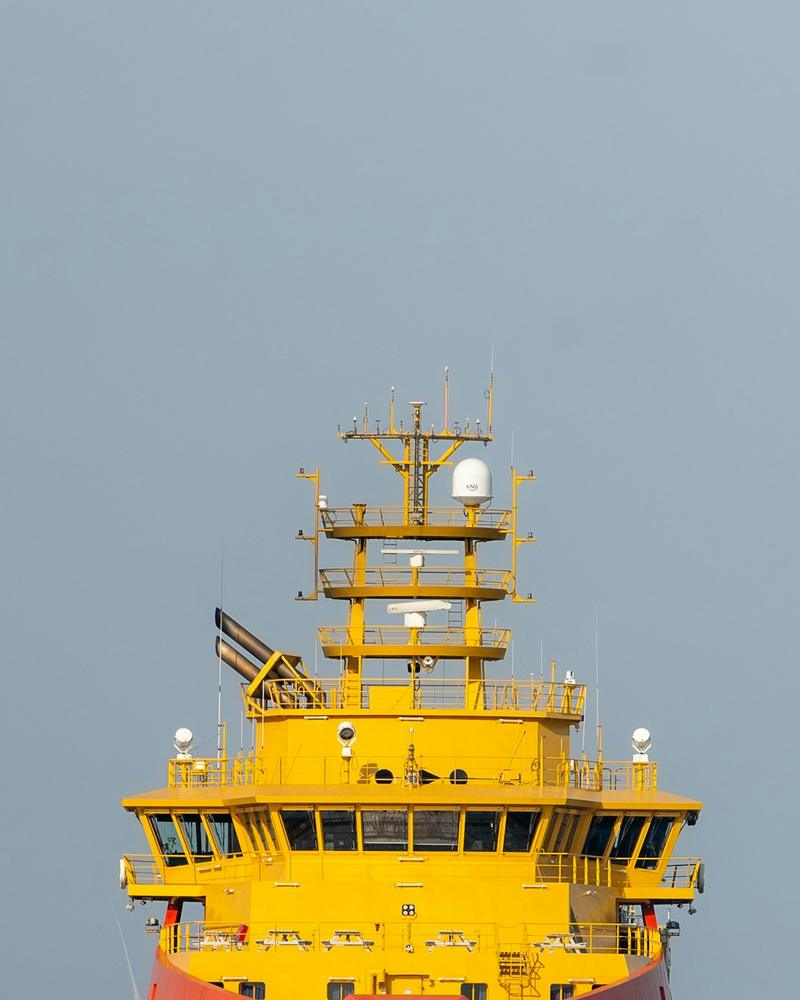
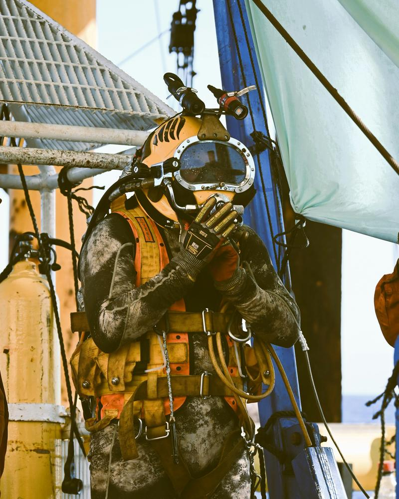
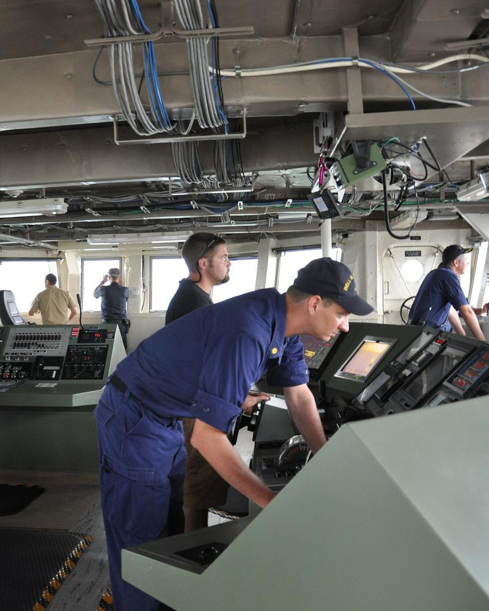

Quem move o mar move o Brasil.
A Crewnauta conecta profissionais do mar às empresas e aos navios que precisam deles. Currículo marítimo, documentos organizados e oportunidades em uma só plataforma.
Grátis para quem embarca. Seguimos a Convenção do Trabalho Marítimo (MLC 2006) →- Mercado globalPadrões internacionais: STCW e MLC 2006
- Talentos marítimosCurrículo com certificados e validades
- Rede da indústria160 empresas e navios com dados públicos
- Carreira no marO caminho para a próxima função
Versão piloto · Macaé e Rio de Janeiro · foco inicial em oficiais com DP · fotos de banco de imagens; pessoas de exemplo são fictícias
O setor em números
Uma plataforma para quem faz a economia do mar funcionar.

Empresas e recrutadoresVeja quem está pronto para embarcar.
Pesquisadores e inovadoresBiblioteca com artigos científicos sobre o setor.
Estudantes e novos talentosCentros de treinamento e os cursos de cada função.Juntos por um oceano mais conectado.
A Crewnauta é mais do que uma plataforma. É uma rede que aproxima profissionais, empresas, conhecimento e oportunidades em torno da economia do mar.
- Carreiras no mar
- Inovação marítima
- Conhecimento e ciência
- Economia azul
Sua experiência no mar merece ser reconhecida.
Suba o currículo em PDF ou Word: a Crewnauta lê no seu aparelho, organiza certificados e validades, soma o tempo de mar e mostra para quais funções você já está pronto.
- Certificados com data de validade e nível de verificação
- Tempo de mar e experiência por tipo de navio
- Prontidão para a função e o que falta
- Histórico de embarques
- STCW básico (BST)até 08/2029Nível 3 · confirmado no emissor
- DP irrestrito (NI)até 03/2028Nível 2 · conferido
- GMDSS GOCaté 01/2027Nível 1 · documento enviado
- Exame médicovence em 40 diasNível 0 · declarado
- 2026PSV · 28 × 28Oficial de Náutica (DPO)
- 2025AHTS · 28 × 282º Oficial de Náutica
- 2023OSRV · 21 × 212º Oficial de Náutica
Da primeira candidatura
à próxima recontratação.
- 1Currículo em diaCada certificado com validade; selo "pronto para embarcar".
- 2Vaga ou conviteA empresa vê na hora o que cada candidato atende.assinatura da empresa
- 3Proposta por escritoFunção, navio, regime, salário e data de embarque.
- 4Embarque confirmadoOs dois lados confirmam no app.só aqui a empresa paga o fee
- 5Avaliação cegaOs dois lados avaliam; ninguém vê a nota do outro antes.
- 6RecontrataçãoA empresa chama de novo quem já conhece.
Quem embarca nunca paga
Seu currículo é grátis, hoje e sempre. A convenção internacional do trabalho marítimo (MLC 2006) proíbe cobrar do marítimo pela colocação. Aqui, quem paga é a empresa.
Documentos em dia, sem susto
Cada função mostra quais certificados exige e quando cada um vence. Você descobre o que falta antes de se candidatar, não na hora do embarque. Alertas de 90, 60 e 30 dias em breve
Para a empresa: quem está pronto
A vaga compara cada currículo e mostra o que atende e o que falta. Meio salário mensal só quando o embarque é confirmado. A tripulação que a empresa já tem entra com fee zero.
Saiba como é o navio em breve
Quem embarcou de verdade avalia navio e empresa, protegido contra retaliação, e a empresa tem direito de resposta. Começa com o piloto, quando houver embarques reais.
Quem embarca
não paga.
Currículo, documentos, caminho de carreira e vagas. Hoje e sempre.
Para buscar, convidar e organizar a tripulação. Ver planos
A empresa paga só quando o embarque é confirmado pelos dois lados.
A Crewnauta cumpre a Convenção sobre Trabalho Marítimo da OIT (MLC 2006), em vigor no Brasil desde 2021, e as leis brasileiras do trabalho no mar e da proteção de dados. Não é só obrigação: o nosso objetivo é fortalecer o sistema. Rigor, robustez e transparência no que precisa ser conferido, para trazer segurança ao setor, eficiência às operações e sustentabilidade para o todo.
- Regra 1.4Nenhuma taxa ao marítimoem vigor
Nada de cobrança direta ou indireta por recrutamento, colocação ou busca de emprego. Quem paga é a empresa. Serviço pago só de terceiros, como um curso, e nunca dá prioridade a vaga.
- Norma A1.4Contrato claro antes do embarqueno piloto
Proposta por escrito com função, navio, regime, salário e data. O marítimo lê tudo e conhece os seus direitos antes de aceitar.
- Norma A1.4Empresas conferidasno piloto
Antes de anunciar vagas, a empresa é verificada: CNPJ, registro e frota. Sem empresa de fachada e sem vaga que não existe.
- Norma A1.4Sem lista negraem desenvolvimento
Avaliação nunca vira lista para barrar ninguém. Quem embarcou avalia protegido contra retaliação, e a empresa tem direito de resposta.
- LGPD · Lei 13.709Seus dados, sua decisãoem vigor
O currículo é lido no seu aparelho. O perfil só aparece para empresas se você ligar, e você pode apagar tudo quando quiser.
- STCW · NORMAMCertificados com rigorem vigor
As exigências de cada função seguem a STCW e as normas da Marinha do Brasil. O que é declarado, enviado ou conferido fica sempre identificado.
- Norma A1.4Canal de queixaem desenvolvimento
Qualquer marítimo poderá registrar uma queixa sobre uma empresa ou sobre a própria Crewnauta, com resposta registrada.
Convenção sobre Trabalho Marítimo, 2006 (OIT), Regra 1.4 e Norma A1.4 · promulgada no Brasil pelo Decreto 10.671/2021, em vigor desde 7/5/2021 · Lei 13.709/2018 (LGPD) · redação jurídica final em revisão
O que o mar faz por nós. E quem faz o mar funcionar.
de barris de óleo equivalente por dia no Brasil em 2025, recorde. 79,63% vêm do pré-sal, no fundo do mar.
ANP, boletim anual 2025
embarcações de apoio offshore no Brasil: o 5º país do mundo nessa frota.
Clarkson, fev/2025
novas embarcações de apoio a afretar no plano da Petrobras para 2026–2030.
Plano de Negócios Petrobras 2026–2030
empregos diretos no apoio marítimo brasileiro, 14.000 deles de marítimos.
Syndarma/ABEAM, Panorama 2022
oficiais faltando no mundo em 2026. Oficial é gente que o setor disputa.
BIMCO/ICS, Seafarer Workforce Report 2026
oficiais devem faltar no Brasil até 2030.
USP/Cilip e Fundação Vanzolini, 2026
Há gente que passa semanas longe de casa.
"Quem embarca já conhece o navio pelo nome. Falta o navio conhecer você."
A Crewnauta nasce para tornar o trabalho de quem embarca mais seguro, mais claro e mais justo.
marítimos já pagou taxa ilegal para conseguir emprego. A MLC 2006 proíbe.
pesquisa citada pelo sindicato Nautilus, jan/2025
marítimos abandonados em 410 navios em 2025, recorde.
ITF, 2025
do comércio mundial, em volume, vai por mar.
UNCTAD, Review of Maritime Transport 2025
O que muda para quem embarca e para quem contrata.
O mar também se entende pelo que acontece abaixo da superfície.
Estamos chamando as primeiras empresas de apoio offshore e os primeiros oficiais com DP em Macaé e no Rio.
Entrar na lista do pilotoA lista do piloto ainda não recebe inscrições: nada é enviado desta versão de teste.
Sua próxima rota começa aqui.
Organize sua experiência, entenda seus documentos e esteja mais perto da próxima oportunidade.
Rafael Siqueira exemplo fictício
Para quais funções você já está apto
Conta só os certificados; a carta de competência de cada cargo é conferida à parte.
Suba o seu e veja o seu perfil montado.
PDF, Word (.docx) ou texto. A Crewnauta lê a função, os certificados com as validades e os embarques, monta o perfil e pergunta só o que faltar.
Versão de teste: o arquivo é lido no seu próprio aparelho. Nada é enviado; o perfil fica só neste navegador e você apaga quando quiser.
Cada resposta atualiza o perfil na hora. Pode pular e voltar depois.
Escolha a função lá em cima. Aqui aparece, em ordem, o que fazer para ter todos os certificados obrigatórios e onde fazer cada curso.
Calculado sozinho a partir dos embarques comprovados; nunca digitado.
Tempo de mar por tipo de navio
Dados de mar
Certificados obrigatórios
O anel esvazia conforme o certificado se aproxima do vencimento. Marque, desmarque e mude as datas para ver o currículo se ajustar.
Desejáveis
Nível de verificação. 0 declarado pelo tripulante · 1 documento enviado · 2 conferido pela Crewnauta · 3 confirmado no emissor (ex.: Nautical Institute, OPITO).
Registro completo de embarques
| Navio | IMO | Tipo · DP | Bandeira | Empresa | Função | Embarque | Desembarque | Dias | Comprovação |
|---|
Veja quem está pronto para embarcar.
Monte a vaga e veja, em cada currículo, o que atende, o que vence logo e o que falta. Menos ida e volta de documento.
2º Oficial de Náutica com DP
Rafael Siqueira
Os dados vêm do currículo. Mude um certificado lá e a compatibilidade muda aqui.
Abrir o currículoQuem está disponível
A onda mostra quando cada pessoa fica disponível nos próximos 90 dias. Nome e contato só no plano pago.
Do convés à ponte.
O trabalhador nunca paga, como manda a Convenção do Trabalho Marítimo (MLC 2006). A empresa paga para buscar e paga quando o embarque acontece. Valores de partida, a validar com as empresas do piloto, que testam grátis por 90 dias.
Trabalhador
- Currículo e carteira de documentos
- Alertas de vencimento em breve
- Vagas de empresas verificadas no piloto
- Avaliar navios em breve
Empresa · Básico
- 1 recrutador
- Vagas e busca com filtros
- Perfil da empresa e da frota
- Responder avaliações
Empresa · Profissional
- Contato direto e convites
- Escala de embarque e recontratação
- Documentos da tripulação própria
- Relatórios
Fee só no embarque
Meio salário mensal, cobrado só com o embarque confirmado. Proposta: reposição grátis se a pessoa sair antes do fim do primeiro embarque. Consultorias no Brasil cobram de 10% a 25% do salário anual.
Inteligência Setorial, consultoria de recrutamento e seleção
Traga sua tripulação
Fee zero para quem a empresa já emprega e cadastra aqui. A empresa ganha a carteira de documentos; a plataforma ganha gente verificada.
Frotas e agências
Sob consulta para frotas grandes e agências de tripulação, com a marca delas e sem fee.
Quem contrata quem embarca.
empresas mapeadas, no Brasil. Escolha um setor ou veja todos os navios.
Frotas com dados
Onde fazer cada curso.
escolas e centros reais que dão os certificados de quem embarca. Cada curso que falta no currículo aponta para eles.
Assuma o seu perfil, divulgue as turmas e apareça para quem precisa do curso agora. em breve
Carregando o mapa…
Seu currículo, sempre com você.
Sem senha: mandamos um código de 6 dígitos para o seu e-mail.
Versão de teste. O seu perfil fica guardado na Crewnauta e só você o vê, até decidir mostrar para empresas.
Seu perfil
Quem vê o seu perfil
Desligado: só você vê. Ligado: empresas do piloto veem função, certificados e embarques; contato só quando você aceitar um convite. empresas no piloto
Fotos de navio
Mande fotos dos navios onde você embarcou: camarote, refeitório, convés. Elas aparecem no perfil do navio depois de conferidas.
Apagar o meu perfil
Apaga o perfil e as fotos que você mandou. A conta continua: para sair, use "Sair".
Quem está a bordo
O som que desenha o fundo.
Antes de um poço, um navio sísmico puxa cabos de quilômetros e escuta o eco do fundo. Antes de um duto, um navio com DP fica parado no mesmo ponto por dias. Cada um desses trabalhos precisa de gente certificada a bordo.
Para quem quer se aprofundar.
Os artigos mais citados de cada tema, de revistas científicas de 2010 em diante. O selo "aberto" indica leitura gratuita.
A gente se encontra aqui.
Tiago, oficial com DP, e Helena, que cuida da tripulação de uma empresa de apoio, contam em um minuto como a Crewnauta junta os dois lados. Personagens fictícios.
Vozes geradas por inteligência artificial (Google Gemini) a partir do roteiro abaixo.